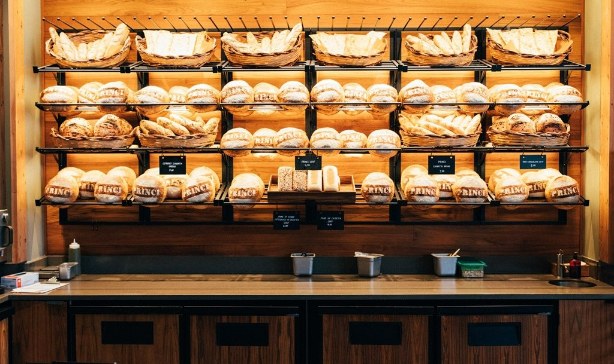

NUESTRA EMPRESA
Croissant es una empresa familiar que nació a principios de los años 90 en la ciudad de La Quiaca, con el fin de servir pan tanto a particulares como a tiendas, bares, restaurantes y supermercados.
A lo largo de los años, Croissant ha apostado por la innovación, desarrollando nuevos productos diferenciales tanto por su sabor, como por su funcionalidad. Como resultado de esa investigación, nace su producto estrella, el "Croissant", el primer pan de fibra verde.

Su misión es ser la empresa líder en el negocio de la panadería y repostería, superando las expectativas de los clientes, a través de un equipo comprometido.
Croissant adapta sus productos a las exigencias de sus clientes, es por ello que ofrecemos un especializado abanico de productos para el sector de la hostelería, modificando formas, pesos y tamaños de los productos en función de sus necesidades.

CROISSANT - PANADERIA
Derechos Reservados © 2022
Creado por Jose Ricardo Cala and Martin Leonel Ibañez